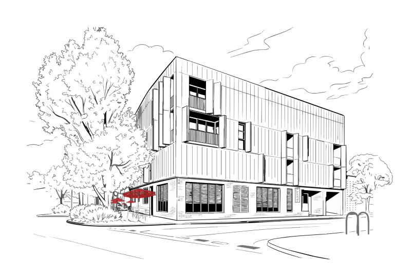

Lagotto is an award-winning Italian restaurant in Fitzroy North, Melbourne, owned and run by Head Chef Matteo Fulchiati and Liam Cree. Seasonal pasta, aperitivo and a considered Italian wine list, at 1 York Street, Fitzroy North.
